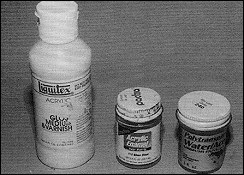
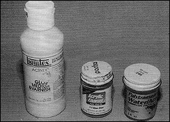
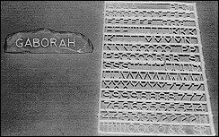

Welcome to this issues installment. This time out I'm going to share with you some modeling tricks I've stumbled upon over the years. They're the sort of things that haven't come up in any of the previous Xacto Facto articles but which you may find handy at some point in the future.
Before we get started I'd like to comment on the recent controversy surrounding the Blank and Generic kits. I think it's extremely unfortunate that both sides of this dispute started pointing fingers and name calling. Anybody remember a few years ago when all those child/adult switch-a-roo movies came out? There was one with the kid from "Wonder Years", one with Duddley Moore, another with George Burns, and I even think there was a female version, not to mention Big which worked with similar themes. It was almost as if a memo went out to each of the studios saying make this movie. My point is that sometimes two different people can come up with the same idea, say one person in California and another in Texas. It just happens and sometimes it's just plain old coincidence. As our hobby grows, and every day there seems to be a new company producing kits, we are bound to run into situations where two, maybe three people come up with the same idea. Let us hope that in the future we can all take the high road in these situations and give our fellow model makers the benefit of the doubt before pointing fingers and making accusations.
This situation has become personal for me because I recently found out that a fellow producer of kits has accused me of stealing the idea of the X-O Facto Phantom Base from him. I understand that he has gone so far as to write an article discussing this. Since I haven't read the article I don't know if he has named X-O Facto or myself as being guilty of stealing this idea. Since I believe that reputation means a lot in this business I am very concerned. For this reason, I'd like to explain how I got the idea for the Phantom Base. Check out page 33 of issue number 214 of Famous Monsters of Filmland. It's an ad for Monsters in Motion and near the bottom is a photograph hawking the sale of the Billiken Phantom. The Phantom is shown standing on a base with an organ, a music stand, a violin, sheet music and a number of other items from the scene in the movie. Before the MIM price, the phrase "No Base" appears in parentheses. MIM has been running this photo for years and it occurred to me that with the "no base" disclaimer, they must be getting some interest in the base. Since a lot of people already own one of the Phantom kits it only made sense to offer the base as a kit. For the record, that base was created by hobby icon David Fisher and it was the inspiration behind the X-O Facto Phantom Base. I've discussed the base with David and at no time did he suggest that I stole the idea from him. I had no knowledge of anyone else releasing a Phantom kit on a base with an organ when I came up with the idea of doing our Phantom Base. What really makes this situation disturbing is that I have the utmost respect for the kits produced by this person and will no doubt, add their new Phantom kit to my collection. I believe the path to understanding (and world peace for that matter) comes through communication and therefore invite anyone who ever has a problem with anything I've done to call me and discuss the situation.
.. Speaking of the Phantom Base, after getting some feedback on the initial release of the kit, we have done some refining. The organ and a number of the parts in the kit have been remolded. The new improved Phantom Base is available at the same price as the original. Also, I'd like to thank the folks at Cellar Cast for allowing me to include their Phantom and Bride name plates with those bases.
Other new kits now available from X-O Facto include a San Francisco Police Detective who wants to know if you feel lucky (sculpted by Pat Delany), the Bully based on a monster from Godzilla's Pevenge, and a smaller two figure kit from the same film called The Bully v. Baby G., both kits sculpted by Brian Hug, first place winner of the G Con scratch built contest.
 Okay, on with the information segment of our show.
Okay, on with the information segment of our show.
Tip One: The first tip came out of doing The Taxi Driver
kit for a retail client. On the base of that kit there are supposed
to be couple of soda cans and a magazine. Well, although the
soda cans looked like soda cans, the lump of resin that was supposed
to be the magazine, didn't look like anything even resembling
a magazine. Then it occurred to me that magazines often run
miniature photos of their covers in their subscription and back
issue ads (as KitBuilders often does). I picked up a gun magazine
and sure enough found an ad that featured a miniature photo of one
of the back issues. I cut out the miniature magazine cover and an
 equally proportioned section for the back cover. (Ills. #1). I
then cut out some loose pages to make up the inside of the
magazine and glued it all together with Elmers glue. From
here I took the idea a step further with the help of my trusty
computer. Utilizing a desktop publishing package that came
with a bunch of clip art, I created the sheet music, medical
charts, and book pages shown in Ills. #2. With a little imagination
you can use computer generated miniatures to add an
extra element of realism to kits and dioramas. If you don't own
a computer, check your local library, many of them have computers
and software that can be used by the general public.

equally proportioned section for the back cover. (Ills. #1). I
then cut out some loose pages to make up the inside of the
magazine and glued it all together with Elmers glue. From
here I took the idea a step further with the help of my trusty
computer. Utilizing a desktop publishing package that came
with a bunch of clip art, I created the sheet music, medical
charts, and book pages shown in Ills. #2. With a little imagination
you can use computer generated miniatures to add an
extra element of realism to kits and dioramas. If you don't own
a computer, check your local library, many of them have computers
and software that can be used by the general public.

Tip Two: Let's talk shiny. So, you've airbrushed your kit, you've painted the eyes, lips, teeth and any other detail work that needed to be brushed in and you've sealed the whole thing with dull coat, time to gloss the eyes, teeth, and what- ever else needs glossing. I started off doing my glossing with Liquitex Gloss Medium and then graduated to Pactra Acrylic Gloss Clear. Now I use Polytranspar Wet Look Gloss (No. 240). (Ills. #3) 1 know, I know, it says right on the label "Airbrush Paint", well, sometimes you have to break the rules. I find that Polytranspar Wet Look Gloss gives the shiniest finish yet, and yes, you can brush it on. Use two thin coats. Brush the first on, let it dry and then brush on the second. Try it, see what you think. The Polytranspars, by the way, are taxidermy paints that come in a variety of vibrant colors, transparent colors, and opaque colors. Also, you can use the Polytranspars as a wash. Be sure that your base paint has been sealed with a dull coat, then use a very fine brush to paint in the smallest indents, creases or wrinkles, working them one at a time. Once you've painted in the wrinkle, immediately use a slightly damp Q-Tip to wipe off any excess, leaving only the smallest amount in the deepest part of the wrinkle or crease. Again, try it and see what you think. 
Tip Three: Okay, so you've finished your kit, you've created
your own base but something's still missing ... a name
plate. What to do? Well, start off by visiting one of my
favorite haunts, your local well stocked model railroad store.
That's where I picked up the plastic letters shown in Ills #4.
You can use these on either a piece of sheet styrene or on
a sculpted background like the one I've used. If you can't find
a name plate for that favorite kit, try this.

Tip Four: Let's say you've finished your kit and have
somehow managed to put a hair line crack into that carefully
sanded, seamless shoulder joint you worked so hard on
sanding smooth. Now, it's just a crack, the rest of the arm
is still firmly glued in place and you don't want to use glue or
putty for fear of screwing up the paint job. Try Model Magic
(Ills. #5). Model Magic has a spackle like consistency but; is
completely water soluble, even after it dries. Simply take a little
bit on the tip of your finger and spread it across the crack.
Use a wet paper towel to wipe off the excess, wait until it dries
and then touch it up by either airbrushing or dry brushing.

Tip Five: Here is an assortment of tools that can come
in handy for any number of model making situations (Ills. #6).
The circle guides came from the architecture section of a
local art store. In addition to circles, you can get guides for
squares, triangles, rectangles and just about any other
shape you can think of, perfect for creating that space ship
hatch or manhole cover. The next item is made by X-acto
Knives and is used for creating parallel lines, perfect for
marking and cutting styrene sheets, balsa wood or foam
board. Next is the X-acto razor saw and meter box, used for
making straight and perfect 45 degree cuts. Compare the
pieces of balsa wood on the left to the pieces of balsa wood
on the right in (Ills. #7). The pieces on the left were cut with
the meter box while the ones on the right were cut with just
a blade. Check out Anthony Mestas' article in Amazing
Figure Modeler #6 for additional uses of the meter box.
Finally, the jewelers saw which can be used to make any
number of delicate angled cuts in plastic or wood. All of
these items can be used to improve your modeling skills.

Tip Six: Here's one for those of you who have taken the
plunge into the realm of mold making. You can make an
almost perfect one-piece mold by mounting your original up-
side-down in a plastic cup (Ills. #8). Simply pour in the rubber,
allow it to dry and then cut away the plastic cup. Cut the
mold on one side, remove your original piece, and cut a hole
in the top of the mold from which to pour in the resin. Once
you're ready to cast your piece, simply place the mold in a
plastic cup (the same size as the first cup) and pour the
resin. You end up with an almost perfect piece with a mold
line just up one side. Many thanks to Pat Delaney for sharing
this mold making technique.

That's it for this time. Remember, you can write to me at:
John Tucky
c/o X O Facto
P.O. Box 341368
Los Angeles, CA 90034
Originally published in
KitBuilders Magazine.
Reprinted here with permission. Thanks, KitBuilders!
The Gremlins in the Garage webzine is a production of Firefly Design. If you have any questions or comments please get in touch.
Copyright © 1994-1997 Firefly Design.